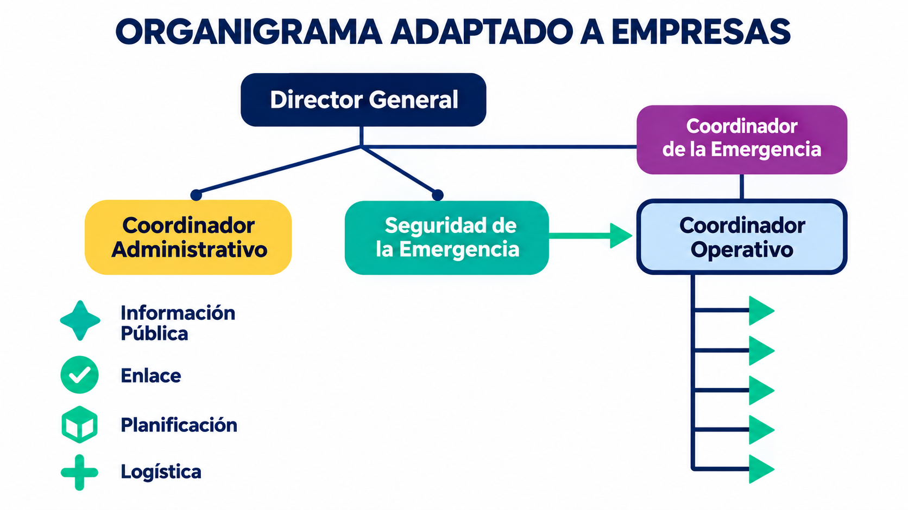

Estado del incidente
Preparación
Sin incidente activo
Centro de trabajo para relacionar la respuesta táctica SCI con la gobernanza de crisis y la continuidad del negocio. El diseño retoma tu propuesta de resiliencia empresarial y coordinación con organismos de socorro.
La información fluye desde la operación hasta la dirección y la recuperación.
Organiza el incidente, define objetivos por periodo, asigna responsables y recursos, y conserva una bitácora común.
Ir a Operación MAHRO →Conecta al comité de crisis con el mando operativo para decidir prioridades, comunicaciones y escalamiento.
Ir a Gobernanza →Identifica procesos prioritarios, responsables y necesidades de recuperación para reducir la interrupción.
Ir a Continuidad →De la detección a la recuperación con un mismo panorama de situación.
Enlaces a los materiales originales que orientan este prototipo.
Establece el contexto común del incidente, el periodo operacional y el objetivo general. Esta información alimenta el resumen y el informe imprimible.
Información base para una situación o ejercicio.
Recoge decisiones breves que orientan a los tres niveles MAHRO.
Si la situación supera la capacidad de la organización, registra la coordinación con las autoridades y organismos de respuesta en la sección Gobernanza. Este prototipo no despacha recursos ni transmite alertas.
Deja constancia de hitos para entregar el turno y actualizar el periodo.
Registro local del periodo operacional.
Define objetivos y asignaciones; registra recursos y un conteo agregado de personas afectadas. La estructura se adapta al tamaño y capacidad de cada organización.
Prioridades concretas, medibles y con responsable por cargo.
Registra equipos funcionales de la empresa y enlaces externos.
Usa cantidades generales para el panorama de situación; no ingreses nombres ni información médica identificable.
Equivalencias de la propuesta MAHRO. Cambia los cargos para ajustarlos a la estructura real de cada empresa y asigna responsables por función.
Carga el plano de una sede y ubica puntos de comando, riesgos, accesos, encuentro, primeros auxilios y recursos.
La imagen y sus marcas se guardan solo en este navegador. También puedes usar la cuadrícula sin subir un plano.
Define qué hacer, quién responde, en qué fase y con qué prioridad; actualiza el estado por periodo.
Puedes elegir cargos del directorio MAHRO o escribir un responsable distinto.
La guía es una base de planeación, no una instrucción para intervenir. Sigue el plan aprobado por la empresa y las indicaciones de las autoridades competentes.
Conecta las prioridades del incidente con la recuperación de procesos críticos. Registra alternativas, responsables por cargo y necesidades de restablecimiento.
Ordena los procesos según impacto y tiempo tolerable de interrupción.
Vista rápida del estado de los procesos agregados.
*Registra la meta de tiempo internamente según la metodología aprobada por tu organización; no es un cálculo automático.
Actualiza el estado cuando cambie la capacidad operativa.
Ordena decisiones de dirección, enlaces con actores externos y canales de coordinación. Esta sección materializa la línea interorganizacional de tu propuesta doctoral.
Registra cargos y función, sin nombres ni datos personales.
Registra la entidad y el tipo de coordinación requerida.
Vincula decisiones del comité con su impacto táctico o de continuidad.
Trazabilidad local entre dirección y ejecución.
La propuesta de Modelo Administrativo Híbrido de Resiliencia Organizacional articula lo que suele gestionarse por separado: respuesta al incidente, decisiones de crisis y continuidad operativa.
El prototipo usa la organización táctica del SCI como base operativa, agrega una capa estratégica de gobernanza y mantiene a la vista los procesos que la empresa necesita recuperar.
Organiza equipo, objetivos, asignaciones, situación y recursos por periodos operacionales. Su lenguaje compartido facilita el enlace con organismos de respuesta.
Herramientas relacionadas: contexto SCI 201, objetivos SCI 202, conteo agregado de afectados y bitácora SCI 211.Define quién decide, cómo escala la situación, qué información recibe la dirección y cómo coordinarse con organizaciones externas.
Se inspira en la gestión de crisis y la propuesta de articulación interorganizacional 1.B.Protege servicios y procesos prioritarios, identifica dependencias y organiza alternativas para la recuperación progresiva.
Se inspira en BCM / ISO 22301; los criterios concretos se definen y validan con cada empresa.Se conserva la figura de la propuesta doctoral y se muestra cómo las funciones se asignan a los cargos existentes en cada empresa.

Una mira hacia dentro de la empresa y la otra hacia el sistema territorial.
Desarrollar y validar un modelo para articular la respuesta táctica de crisis con la continuidad del negocio. Parte de las prácticas existentes, identifica desconexiones y diseña procesos, comités, flujos de información y decisiones para cada organización.
Diseñar cómo empresas, organismos de socorro y autoridades coordinan capacidades, roles, canales de información y un sistema de comando unificado cuando el impacto excede una organización.
La operación informa a la dirección; la dirección fija prioridades; continuidad sostiene la recuperación.
Consulta las páginas originales para revisar el alcance académico y operativo.
El sistema se plantea como un Modelo Administrativo Híbrido de Resiliencia Organizacional para empresas; integra la respuesta táctica con la dirección de crisis y la continuidad del negocio.
Incorpora la organización por funciones, los objetivos, las asignaciones, los recursos y la coordinación táctica.
Conecta la operación con gerencia y dirección: escalamiento, decisiones, comunicación y coordinación externa.
Prioriza procesos, dependencias, alternativas y recuperación para sostener la actividad empresarial.
La propuesta doctoral plantea una ruta cualitativa para el modelo empresarial y una ruta mixta para la coordinación entre organizaciones.
Analizar a profundidad las realidades operativas de empresas de distintos sectores —con énfasis en el ecosistema logístico-portuario— para diseñar un modelo robusto y adaptable.
Examinar cómo empresas y organismos de respuesta coordinan sus capacidades cuando el evento supera a una sola organización.
Los módulos convierten la arquitectura de investigación en elementos que la empresa puede adaptar y revisar.
El directorio propone equivalencias iniciales, no una estructura obligatoria. Cada empresa puede editar los cargos, asignar responsables por función y añadir o retirar posiciones de acuerdo con su tamaño, sector y plan aprobado.
La página demuestra la arquitectura propuesta; no acredita validación empírica, certificación ni preparación para dirigir una emergencia real. La validación descrita forma parte del trabajo de investigación.
Consulta la propuesta doctoral, el desarrollo MAHRO y el tablero SCI de referencia.
Esta página reúne las dos escalas de investigación y muestra cómo se relacionan con la preparación de empresas ante emergencias de gran alcance.
Estudio cualitativo de casos múltiples para conocer cómo funcionan empresas de distintos sectores, identificar sus riesgos y diseñar una estructura de respuesta que se pueda ajustar a sus cargos, procesos y recursos.
Metodología mixta y participativa para entender cómo se conectan empresas, autoridades, proveedores y organismos de respuesta cuando una emergencia afecta a varias entidades.
La preparación interna de la empresa se enlaza con su red externa para sostener operaciones y apoyar una recuperación coordinada.
El evento muestra por qué la preparación debe abarcar tanto la empresa como las relaciones entre organizaciones.
El Servicio Geológico Colombiano reportó un sismo de magnitud 7,4 y 103 km de profundidad el 10 de agosto de 2026. Recibió más de 20.000 reportes de percepción provenientes de más de 1.200 centros poblados.
El epicentro fue en Chocó; Cali y otros lugares reportaron efectos o percepción del evento. La Alcaldía de Cali publicó balances sobre impactos locales y afectaciones de infraestructura. Estos datos describen el evento, no constituyen una predicción de futuros sismos.
Materiales de referencia de esta versión del sistema MAHRO.